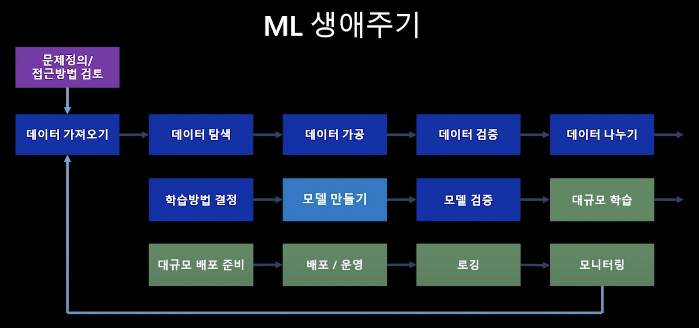
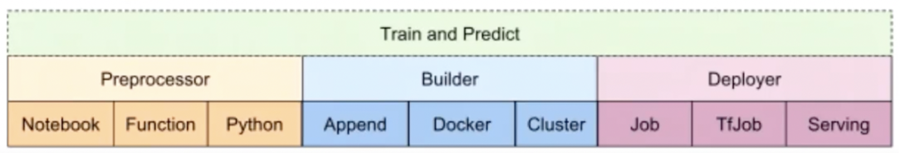

Chapter 1. Motivation for MLOps
ML 생애주기
우리가 Machine learning(ML)을 이용한 솔루션을 생각할 때 흔히 하는 착각이 있다. 그건 바로 무조건적으로 좋은 모델을 만들어서 사용하면 되는것 아닌가? 하는 생각이다.
하지만 실제 ML에는 모델을 만드는 일이 전부가 아니라 문제에 필요한 데이터를 정의, 수집, 준비(가공)하는 과정이 필요하다.
즉 하나의 ML 서비스가 만들어지기 위해서는 모델을 어떻게 만들 것인가? -> 모델을 어떻게 평가할 것인가? → ML 모델을 서비스로 만들 것인가? 와 같은 노력의 과정이 필요하다. 게다가 위 과정을 거쳐서 모델이 만들어져서 서비스로 올라간다고 끝나는게 아니다. ML의 생애 주기는 배포된 서비스를 지속적으로 모니터링하고, 위 과정을 다시 돌아서 모델을 재학습, 재배포하는 과정까지 모두 포함한다.

DevOps vs MLOps
소프트웨어 기반 서비스가 발전하며 서버는 지속성은 주요한 요소가 되었다. 업데이트가 되더라도 유저 입장에서는 지속적으로 서비스가 사용이 가능해야 한다.
이것을 CI/CD 라고 부른다. CI/CD는 지속적 통합(Continuous Integration), 지속적 배포(Continuous Deployment)이며 개발자(Developer)뿐만 아니라 운영자(Operator), QA(Quality Assuarance)와도 관련이 있다. 개발자는 코드 관련된 수정을 할 것이고, 운영자는 최신의 모델로 업데이트 해야하며, QA는 그것에 대해서 평가를 해야한다.
이러한 과정을 묶어 DevOps라고 하며 ML 서비스의 발전에 따라 ML 기반 서비스에서도 CI/CD의 적용은 필수적이며 CI/CD 뿐만 아니라 지속적 학습(CT), 분류 레이블 증가, 학습 시나리오 추가 등 기존 DevOps에서 제공되는 기능의 추가적인 기능이 포함된 MLOps의 개념이 생겼다.
차이점 1. 모델을 만들고 배포하는 과정 추가
차이점 2. 코드 뿐만 아니라 모델을 만들기 위한 데이터 공급이 필요 (실제 프로덕션에서 발생하는 데이터)
공통점 : 입력값이 주어졌을 때, 프로세스를 처리, 처리 과정에서 단위 테스트, 통합 테스트 포함, 배포 후 모니터링
MLOps의 이점
현업 관점
변화에 대한 관리가 가능 (툴 제공 + 일하는 방식)
IT/개발 부서
품질 관리를 ML 분야에서도 확장
ML 프로세스의 수준 향상 (소스코드, 통합 테스트, 컴파일 / 배포, 모니터링)
데이터 전문가
파이프라인 자동화
지속적인 모니터링
재학습/재배포 자동화
Chapter 2. MLOps Lifecycle 1 : 데이터 준비
문제 정의
풀어야 하는 문제 정의를 먼저 해야 함
문제를 해결하기 위해 데이터를 준비하고 이러한 작업들이 실제로 비즈니스 가치를 창출할 수 있어야 함
데이터 확보
문제 해결을 위한 데이터 확보 프로세스
1. 데이터 확보
2. 데이터 수집
3. 데이터 연계 과정
고정되어있지 않고 변화하는 데이터셋의 경우 버전 관리 및 공유가 필수적임
데이터셋 탐색 및 가공
데이터가 어떻게 분포해있는지 확인하는 단계
데이터셋 요약 및 시각화를 이용한 탐색이 필요함 (분포 확인, 이상치 및 결측치 확인, 시각화)
이미지 분류와 같이 데이터에 대한 레이블이 필요할 경우 태그하는 과정이 필요
모델 학습, 통계 분석을 통해 피처 중 중요한 것과 아닌 것을 파악
데이터의 패턴과 분포를 통해 피처 간 연관성 확인
데이터 검증
데이터 품질관리 기반인 검증 단계
1. 테이블 별 건수 검증
2. 코드 검증
3. 무결성 검증
검증 요건에 따라 설계 후 검증 쿼리 개발, 검증 결과 모니터링 후 피드백하는 프로세스
Chapter 3. MLOps Lifecycle 2 : 실험 학습
실험, 모델 학습/최적화/비교평가
ML Lifecycle에서
실험/학습파트데이터 가공 및 검증 파트가 데이터 준비 파트와 겹침
데이터 가공 결과에 따라 모델이 변경되기도 함
모델 성능에 데이터가 직접적인 영향을 미침
-> 대규모 데이터를 대용량 클러스터에서 처리하는 것도 이 과정에 포함
모델은 아래 입력 조건에 따라 결정됨
- 데이터
- 학습 알고리즘
- 하이퍼파라미터
입력 조건들을 바꿔가며 최적의 모델을 찾아가는 과정을 실험이라 부름
이러한 반복적인 과정을 보다 쉽게 관리하고자 함
실험 추적관리
실험 실행: 위 3가지 입력(데이터, 학습 알고리즘, 하이퍼 파라미터)으로 하나의 실험을 수행위 실험과정에서 다양한 산출물들(입력 조건, 모델, 실험이력 등)이 발생하는데, 이를 체계적으로 관리하는 것이 중요함
각 실험에 대해 입력값을 관리 + 산출된 모델의 메타 정보 관리
애저에서는 실험별로 사용된 데이터 & 모델의 버전 관리 & 성능 확인 & 서비스로 배포된 모델 추적 등의 기능을 제공함
자동화된 ML
위 과정을 자동화하기 위한 도구(애저의 기능 이름인 듯, 일반적으로 Hyperparameter Optimization)
높은 성능의 모델을 효율적으로 찾으려면?
입력 조건에 따른 성능을 예측하고, 성능이 좋을 것으로 예상되는 입력 조건으로 다음 실험을 진행 & 이 과정을 반복 수행
애저에서는 이 작업을 수행할 때 다수의 모델이 실행되고 앙상블도 실행됨. 기본적인 성능 지표, 모델을 만들기위한 과정도 로그로 저장됨. 스냅샷 기능은 당시 실행한 py 파일 저장해둠.
Chapter 4. MLOps Lifecycle : 모델 검증 및 배포, 서빙 / k8s, kubeflow 기본
모델의 검증
예측 성능
모델의 예측값이 실제값에 얼마나 가까운지
얼마나 잘 일반화(Generalized)되는지
DS가 관심을 두는 부분
처리 성능
모델이 예측값을 계산해내는데 소요되는 시간, 사용하는 컴퓨팅 자원
안정적으로 얻을 수 있는 추론 성능
SWE가 관심을 두는 부분
서비스가 얼마나 안정적으로 되고 있는지 파악할 수 있는 요소(처리 시간, 처리량, 실패 유형 등)
애저에서는 어플리케이션 인사이트 기능을 이용함. 코드에서 발생하는 모든 로그 정보가 한 곳에서 통합 관리됨
MLOps Lifecycle 3 : 모델 해석
모델 해석의 필요성

대부분은 Black Box Model이다.
정확도 만으로 모델의 성능을 평가할 수 없다.
모델이 예측을 잘하는지 객관적 평가, 성능지표가 필요하다
모델 해석 분류 기준
Intrinsic vs Post-hoc: 모델 자체로 해석 여부 가능한지, 아니라면 해석을 위한 새로운 모델링Model-specific vs Model-agnostic: 특정 모델에만 적용되는지Global vs Local: 데이터에 따른 모델의 범위
모델 해석 방법

MLOps Lifecycle 4 : 모델 배포 및 서빙
Model Serving이란 다른 애플리케이션에서 ML 모델을 사용할 수 있도록 모델을 배포하거나, 모델 API를 제공하는 것을 의미

모델 모니터링
서빙 단계에서는 모니터링의 기능을 제공하여 모델에 대한 성능을 주기적으로 확인해야 함
모델 성능 하락 원인
Data Drift: 데이터의 통계적 변형
Schema Drift: 데이터 스키마 변형
Data Skew: 데이터의 불균형
Concept Drift: 비즈니스 목적의 변형
k8s, kubeflow 기본
k8s
서비스 디스커버리와 로드 밸런싱 : DNS 이름을 사용하거나 자체 IP 주소를 사용하여 컨테이너를 노출
스토리지 오케스트레이션 : 로컬 저장소, 공용 클라우드 공급자 등과 같이 원하는 저장소 시스템을 자동으로 탑재
자동화된 롤아웃과 롤백 : 원하는 상태를 서술하고 현재 상태를 원하는 상태로 설정한 속도에 따라 변경 가능
자동화된 빈 패킹 : 각 컨테이너가 필요로 하는 CPU와 메모리(RAM)를 제공
자동화된 복구(self-healing) : 실패한 컨테이너를 다시 시작하고, 컨테이너를 교체
시크릿과 구성 관리 : 암호, OAuth 토큰 및 SSH 키와 같은 중요한 정보를 저장하고 관리
k8s 클러스터 구조

쿠버네티스 아키텍처에서 클러스터(Cluster)란 컨테이너 형태의 애플리케이션을 호스팅하는 물리/가상 환경의 노드들로 이루어진 집합
Node는 하나의 가상머신을 의미합니다. 쿠버네티스는 컨테이너화 된 애플리케이션을 실행하는 Worker Node와 그러한 Worker Node를 관리하는 Master Node로 구성됩니다.
Master / Worker Node

Master Node
Worker Node

Kubeflow

Kubeflow workflow

Chapter 5. k8s, kubeflow 입문
DevOps
등장배경 : 개발팀과 운영팀의 분리로 인한 문제 발생 조직간 원활한 소통의 어려움 > 서비스 품질 저하
정의 : 개발팀과 운영팀의 협업으로 전체 Life Cycle을 함께 관리하자는 철학 또는 운동 개발팀과 IT팀이 더 빠르고 안정적으로 SW를 빌드 & 릴리즈 할 수 있도록 두 팀간의 프로세스를 자동화하는 일련의 과정
CI / CD : CI: Continuous Integration CD: Continuous Delivery and Continuous Deployment
MLOps
ML팀과 운영팀의 문제를 해결하기 위한 방법 e.g. Data Drift, Schema Drift, Data Skew, Concept Drift…
DevOps & MLOps
DevOps: 개발팀에서 개발한 기능이 정상적으로 배포될 수 있는지 확인
MLOps: ML팀에서 개발한 모델이 정상적으로 배포될 수 있는지 확인
최근에는 ML팀이 직접 서비스를 운영할 수 있게 도와주는 과정까지 포함
k8s
다수의 컨테이너를 운영하기 위한 Container Orchestration System
구성 모듈
Node : Kubernetes의 hardware 요소 중 가장 작은 단위
Cluster : 여러 대의 Node를 모아서 하나의 Cluster로 구성함 ,K8s에서는 각 Node의 상태를 고려하여 배포할 프로그램을 유연하게 관리함
Persistent Volume : Cluster에 배포된 application은 container로 실행되므로 내부에 저장된 데이터는 휘발될 수 있음 Local 또는 cloud storage를 cluster에 mount한 개념
Pods : K8s의 기본 실행 단위, K8s는 container를 직접 실행하지 않고 pod이란 형태로 감싸서 실행
Pod 내의 container 끼리는 동일한 자원과 local network를 공유
Load balancing & Failure resistance: Pod 단위로 서비스의 사본을 여러 개 실행하여 부하를 분담하거나, 서비스가 중단되는 것을 방지
Scaling up & down의 단위이므로 Pod 내에 container 수를 최소화할 것을 권장(side-cars)
Deployments Pod만으로도 app container 실행 가능, 그러나 관리를 쉽게 하기 위해 deployment라는 레이어를 한 층 더 쌓아서 관리
Deployment는 몇 개의 Pod을 항상 띄워둘 것인지 선언하고,
control plane에서는 여기서 선언된 개수를 유지하도록 조절함
Pod을 어느 Node에서 실행할 지는 control plane의 scheduler가 결정
Namespaces
Virtual sub-cluster, Cluster를 가상의 클러스터로 쪼개어, 쪼개진 클러스터 간에는 서로 영향을 끼치지 않도록 함.
하나의 클러스터에서 여러 조직 또는 프로젝트가 작업할 경우
또는 개발 및 운영 단계(Development, Testing, Production)별로 구분할 필요가 있는 경우에 사용
K8s에서는 기본적으로 4가지 namespace가 생성됨(default, kube-system, kube-public, kube-node-lease)
노드 구조
Master Node(Control Plane)
Kube-API server
Etcd
Kube-Scheduler
Kube-Controller-manager
Cloud-Controller-manager
Worker Node
Kubelet
Kube-proxy
Container runtime
웹 실습
웹 실습환경 https://labs.play-with-k8s.com/
Kubeflow
설치
실행
UI만 실행하는 방법
minikube 클러스터(EX 이름 : mlops) 생성
kubeflow Namespace 생성
Istio / Cert-manager /Dex / OIDC AuthService Namespace 생성
Kubeflow 네임스페이스에 UI 설치 kustomize build apps/centraldashboard/upstream/overlays/istio | kubectl apply -f –
UI 포트 열기
삭제
# minikube
minikube stop
minikube status
minikube delete
minikube delete -all
# kubectl
kubectl config get-clusters
kubectl config delete-cluster my-cluster
kubectl config delete-context my-cluster-context
Chapter 6. Pipeline - 1
Pipeline
Kubeflow Pipeline은 docker 컨테이너를 기반으로 확장 가능한 ML Workflow를 구축하고 개발하기 위한 플랫폼, Argo CD를 기반으로 만들어졌음
Argo CD
할당된 리소스에 어떤 컨테이너를 실행할지 컨트롤 하는 역할
사용자가 YAML DAG 명세를 작성하여 쿠버네티스 마스터에 요청을 합니다.
쿠버네티스 API 서버가 명세를 받아 etcd DB에 workflow 정보를 저장합니다.
Argo controller가 reconcilation loop에서 etcd DB의 새로운 정보를 확인하고 kube-scheduler에 필요한 Pod를 요청합니다.
kube-scheduler는 Pod를 적절한 노드에 스케줄링합니다.
Argo controller가 다음번 reconcilation loop에서 다음 dependency가 걸려 있는 Job을 요청합니다.
Kubeflow Pipeline 구성요소
Kubeflow UI 웹 서버
Pipelines 웹 서버는 다양한 서비스에서 데이터를 수집하여 현재 실행중인 Pipelines 목록, Pipelines 실행 기록, data artifact 목록, 개별 Pipelines 실행에 대한 디버깅 정보, 개별 Pipelines 실행에 대한 실행 상태를 표시함
Python SDK
Kubeflow Pipelines 도메인 별 언어 (*DSL)를 사용하여 component를 생성하거나 Pipelines을 지정 (python code to .yaml)
Pipelines Service (중앙 제어)
Pipelines 서비스를 호출하여 정적 구성에서 실행되는 Pipelines 생성 요청, 실행 요청(쿠버네티스 리소스 준비 및 실행), 등록, Workflow 저장 기능 수행
Kubernetes 리소스 (리소스 생성)
Pipelines 서비스는 *Kubernetes API 서버를 호출하여 Pipelines을 실행하는 데 필요한 Kubernetes 리소스 (CRD)를 만듬
오케스트레이션 컨트롤러 (컨테이너(Job) 실행)
일련의 오케스트레이션 컨트롤러는 Pipelines을 완료하는데 필요한 컨테이너를 실행하며, 컨테이너는 가상 머신의 Kubernetes pod 내에서 실행됨
Pipeline Persistence Agent
파이프라인 서비스가 생성한 리소스를 추적하고 메타데이터 서비스의 리소스 상태를 기록 / 컨테이너 실행 추적
Kube API Server
API 서버는 최종 사용자, 클러스터의 다른 부분 그리고 외부 컴포넌트가 서로 통신할 수 있도록 HTTP API를 제공한다. 쿠버네티스 API를 사용하면 쿠버네티스의 API 오브젝트(예: 파드(Pod), 네임스페이스(Namespace), 컨피그맵(ConfigMap) 그리고 이벤트(Event))를 질의(query)하고 조작
Metadata
Experimentation, Job, Pipelines 실행 및 모델 Evaluation.
Artifact
Kubeflow Pipelines는 Minio 서버 또는 Cloud Storage와 같은 Artifact 저장소에 Artifact를 저장
Chapter 7. Pipeline - 2
Pipeline 구축과 개발 패턴에 대한 스터디
설치 방법
KFP 용어
Component
특정 프로그램, entrypoint를 컨테이너 안에서 표현한 것(함수와 같이 input/output 존재, yaml 포맷으로 구성)
Metadata : name, description
Interface : Input / Output 정의
Data passing : Input / Output의 Args(Command-line 또는 파일 경로)
Step
Pipeline의 Component 내 실행 단위 (컴포넌트 연결 표시)
Experiment
Pipeline이 실행되는 workspace (파이프라인은 Workspace 안에서 실행)
Run and Recurring run (Experiment 내 포함)
Run : Pipeline의 Single execution (runtime graph, output artifact, log 포함)
Recurring run : pipeline의 반복 실행 단위
Artifact
모델 Train과 test 결과 (log, model)
DSL
Python to yaml format
KFP SDK
KFP SDK : ML Workflow를 지정하고 실행하는데 사용할 수 있는 Python Package
Type |
목적 |
설명 |
|---|---|---|
kfp.compiler |
파이프라인을 컴파일 |
(YMAL 형식으로, Argo workflow 형태) |
kfp.components |
구성된 파이프라인 Load / 파이프라인 내 함수 호출 |
파이프 라인과 interacting하기 위한 Class 및 Method를 포함 |
kfp.containers |
컴포넌트 컨테이너 이미지를 빌드 |
|
kfp.dsl |
파이프 라인 및 컴포넌트를 정의하고 상호작용 |
파이프 라인 및 구성 요소를 정의하고 상호 작용하는 데 사용할 수 있는 DSL이 포함 |
kfp.client |
Pipeline 실행 |
Kubeflow Pipelines를 위한 client libraries |
KFP CLI Tool
Type |
목적 |
설명 |
|---|---|---|
kfp diagnose_me |
지정된 파라미터로 환경 진단 |
|
kfp pipeline |
파이프 라인을 관리 |
|
kfp run |
파이프 라인 실행 |
|
컴포넌트 생성 실습
순서
1. 컴포넌트 작성
컴포넌트에서 사용할 소스코드 작성, 다른 컴포넌트로부터 데이터를 받기 위해서, 파일이나 명령행 인수를 사용해야 함
2. 컴포넌트 도커이미지 생성
3. 컴포넌트 만들기 - 컴포넌트 빌드
컴포넌트의 데이터 모델을 정의하기 위해서 YAML 형식의 파일을 작성
1. Kubeflow Pipelines DSL을 사용하여 컴포넌트 함수 (ContainerOp)를 작성한다.
2. image 파라미터에 컴포넌트에서 사용하는/생성한 컨테이너 이미지를 입력한다.
3. 컴포넌트 함수는 kfp.dsl.ContainerOp를 리턴한다(선택적으로 kfp.dsl.component 라는 데코레이터를 사용하여 DSL 컴파일러에서 정적 타입 검사가 가능) : 파이프라인 스탭 생성
* ContainerOp : 컨테이너 이미지로 구현된 파이프 라인 작업 (op)을 나타냄.
* dsl.component : 파이프 라인 구성 요소를 반환하는 DSL 함수의 데코레이터
독립적으로 수행가능한 Component(container 형태)로 패키징
4. 파이프라인 빌드
1. Kubeflow Pipelines DSL을 사용하여 파이프 라인 함수를 작성한다.
2. 파이프 라인을 정의하는 함수에 사용할 컴포넌트들을 추가한다.
3. 파이프 라인 함수에서 파이프 라인을 빌드하기 위해서 kfp.dsl.pipeline 데코레이터를 사용합니다.
(데코레이터를 사용하려면 @kfp.dsl.pipeline 어노테이션을 파이프 라인 함수에 추가 하면 됩니다.)
* kfp.dsl.pipeline: 파이프 라인을 빌드하여 반환하는 Python 함수의 데코레이터
5. 파이프라인 컴파일 후 업로드
1. 파이프 라인을 컴파일하여 압축 된 YAML 파일을 생성한다.
2. YAML 파일에는 파이프 라인 실행을 위한 쿠버네티스 리소스들이 정의되어 있습니다. kfp.compiler.Compiler.compile 메소드를 사용하여 컴파일
3. Kubeflow Pipelines SDK 를 사용하여 파이프라인을 업로드하고 실행한다.
* kfp.compiler.Compiler.compile : k8s Pipelines service가 가능하게 Python DSL Code를 YAML형식으로 변환
파이프라인 패턴
Creating components within your application code
Creating components from existing application code
Using prebuilt, reusable components in your pipeline
Chapter 8. Fairing - 1
Fairing
Kubeflow fairing은 kubernetes 환경에서 모델 학습이나 배포를 위한 컨테이너 빌드, 모델을 학습, 모델 배포 과정을 단순화할 수 있는 python library임.
로컬 환경에서 작성한 모델 학습 코드를 쿠버네티스 클러스터에서 실행하기 위해서는 작업환경과 학습코드가 포함된 도커 이미지를 빌드하고 쿠버네티스 클러스터에 띄워서 학습을 진행해야 한다. 뿐만 아니라 작업 환경에 따른 몇몇 작업을 해줘야 하는 경우도 있다.
fairing api를 사용하면 위 과정을 python script나 jupyter notebook 내에서 코드 몇 줄로 간단히 해결할 수 있다.
Components of fairing

Preprocessor (전처리기)
preprocessor는 fairing이 컨테이너 이미지를 만들때 이미지 생성에 필요한 정보를 정의하는 역할. 컨테이너 이미지에 어떤 파일을 포함시킬지 선택할 수 있고, 불필요한 파일은 제외시킬 수도 있으며 포함시킬 수 있는 파일의 종류는 다음과 같다.
Python - 파이썬 스크립트를 통째로 포함시킬 수 있다.
Function - 파이썬 스크립트 전체 대신 내가 원하는 특정 함수만 포함 시킬 수 있다.
Notebook - ipynb 포맷의 쥬피터 노트북 파일을 포함시킬 수 있다. 이때 ipynb 파일에서 파이썬 코드가 아닌 부분을 제거해서 실행가능한 python 스크립트로 변환하여 포함 시킬 수 있고, python 코드가 아닌 주석과 이미지를 포함한 전체 파일을 포함시킬 수 도 있다. 후자의 경우 papermill 이라는 library를 통해 노트북 파일이 실행된다.
Builder (생성자)
생성자는 컨테이너 이미지를 빌드하는 방법과 컨테이너 이미지를 저장할 위치 등을 정의하는 역할.
append - 기존 컨테이너 이미지를 바탕으로 새 레이어를 추가하는 방법이다. 기본 도커 이미지를 가져와서 새로 이미지를 작성하는게 아니라, 기존의 이미지에서 새롭게 추가된 부분만 이미지 레지스트리에 푸시하는 방법이라서 빌드하는데 시간이 상대적으로 적게 걸린다는 장점이 존재한다. containerregistry 라이브러리를 사용하기 때문에 로컬 도커 데몬 설치가 불필요하다.
docker - 로컬 도커 데몬을 사용하여 컨테이너 이미지를 빌드하고 컨테이너 이미지 레지스트리에 푸시하는 고전적인 방식.
cluster - 쿠버네티스 클러스터에서 학습 작업에 사용할 컨테이너 이미지를 빌드하고 컨테이너 이미지 레지스트리에 푸시하는 방식. 위의 docker와 차이는 로컬에서 빌드하냐 클러스터에서 빌드하냐의 차이가 존재하는 것 같음(?)
Deployer (배포자)
배포자는 생성자(builder)를 통해 생성된 이미지를 배포하고 실행할 위치를 지정한다. 그리고 해당 위치에 있는 클러스터에 작업을 배포하고 실행하는 역할을 한다.
Job - 쿠버네티스 Job 리소스를 사용하여 학습 작업을 시작한다.
TfJob, PyTorchJob, GCPJob - 배포하려는 코드가 tensorflow or pytorch 기반이거나, Job을 배포하려는 대상이 GCP(google cloud platform)라면 각 상황에 맞는 Job을 사용가능.
Serving - 쿠버네티스의 deployment와 service를 사용하여, 추론(prediction)을 위한 엔드포인트를 서빙한다.
KFServing (추후 공부 예정) - KFServing을 사용하여, 예측(prediction) 엔드포인트를 서빙한다.
How to install fairing?
pip install kubeflow-fairing
How to use fairing API
https://kubeflow-fairing.readthedocs.io/
Fairing config module
example code
from kubeflow import fairing
fairing.config.set_preprocessor('python', input_files=["/home/andrew/workspace/k8s/train.py"])
fairing.config.set_builder(name='docker', registry='<your-registry-name>', base_image='tensorflow/tensorflow:1.13.1-py3')
fairing.config.run()
TrainJob API
from kubeflow import fairing
from kubeflow.fairing import TrainJob
from kubeflow.fairing.backends import KubeflowGKEBackend
# example 1. Executing a python file
%%writefile train.py
print("hello world!")
job = TrainJob("train.py", backend=KubeflowGKEBackend())
job.submit()
# example 2. Executing a python function
def train():
print("simple train job!")
job = TrainJob(train, backend=KubeflowGKEBackend())
job.submit()
# example 3. Executing a complete notebook
%%writefile requirements.txt
papermill
jupyter
job = TrainJob("train.ipynb", backend=fairing.backends.KubeflowGK(), input_files=["requirements.txt"])
job.submit()
Appendix
MLFlow 예제
MLOps Level
MLOps 레벨과 특징
Level 0
데이터 분석, 준비, 학습, 검증 모두 수동
학습 편향 발생 가능성 증가
CI/CD 없음 (간헐적인 출시일 경우)
ML 시스템 배포가 아닌 예측 서비스
성능 모니터링 부족
Level 1
ML 파이프라인을 자동화하여 모델을 지속적으로 학습
학습 자동화 및 파이프라인 구축
데이터 및 모델 유효성 검사
특성 저장소
메타데이터 관리
Level 2
Level 1에서 CI/CD면에서 집중적으로 강화된 시스템을 MLOps Level 2로 구분
소스 제어
서비스 테스트 및 빌드
배포 서비스
모델 레지스트리
특성 저장소, ML 메타데이터 저장소
ML 파이프라인 조정자
Reference
Chapter |
URL |
|---|---|
1 |
|
2 |
|
Appendix : MLOps Level |
|
3 |
|
3 |
|
4 |
|
4 |
|
4 |
|
4 |
|
4 |
|
4 |
|
4 |
|
4 |
|
4 |
|
4 |